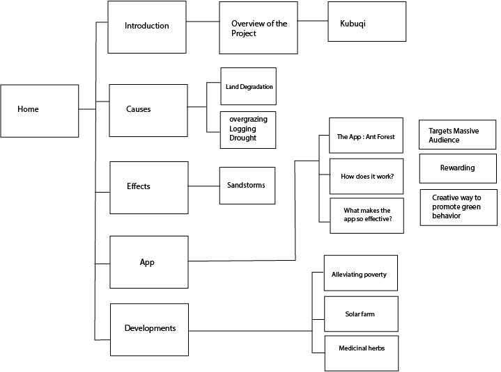

PROGRESS
First, I began by researching all the essential information and organize into different sections using a mind map. The most difficult encounters were representing the facts in a creative and organized narrative.


In my information design class, I worked in a group of 3 to design an informative website that addresses the environmental issue of desertification in China. Good teamwork, performance, and management allowed our team to deliver a successful final product to our audience.
The first stages of creating this project were brainstorming topics and research. During the first meeting, we discussed each other’s interests to come up with an idea and who our target audience was. We divided the project into three main roles which were: illustrator, web developer, and writer. Afterward, we individually took upon a role based on our strengths and did research. During each meeting, we discussed, make changes and began building a prototype.
First, I began by researching all the essential information and organize into different sections using a mind map. The most difficult encounters were representing the facts in a creative and organized narrative.
I did extensive research on different data types and methods to present information. We eventually proposed the idea of including interactive illustrations, and diagrams to generate sn interest from the audience and promote an easier read and understanding..

I was responsible for writing the website content. The greatest challenge for me was selecting the most crucial information for our audience and writing the content through an formal approach. First, I began by researching all the essential information and organize into different sections using a mind map. The most difficult encounters were representing the facts in a creative and organized narrative.
The biggest factor in our success was great teamwork and management. Our group respected each other’s opinions and worked together and assist each other out with any difficulties we encountered to put together the final website. As well, we were organized and scheduled meetings and deadlines for ourselves to ensure we were efficiently using our time..